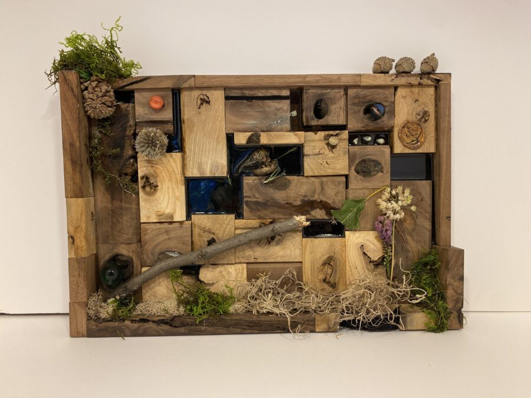

Cori O’Connor: There Are Cracks in Our Souls
Join us for the opening of Cori O’Connor’s solo exhibition “There Are Cracks in Our Souls”. Featured artwork document O’Connor’s personal experiences and journey through death and rebirth; loss, grief, and healing. As the artist describes it, “sometimes we have to be broken to glow.”
Cori O’Connor is a mixed-media artist based in Chicago, originally from Gainesville, Florida. She is known for her expressive work exploring themes like vulnerability and beauty, often featuring everyday objects and natural debris.
On view February 13-March 7, 2026. Opening reception 5-9pm on February 13 at 5pm at Art City.